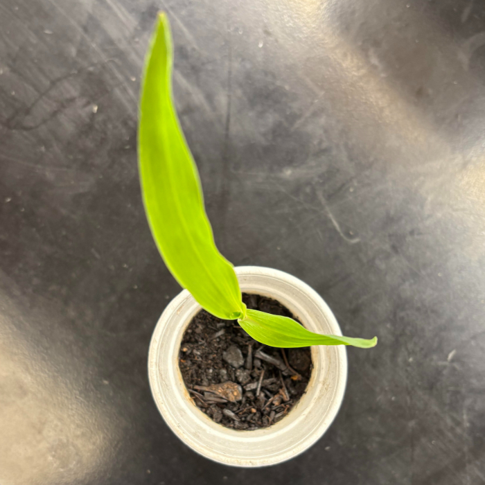

[ data_points ]
| height: | 10-15cm |
| leaf_count: | 2-3 |
| water_given: | 25ml |
| light_exposure: | 24h |
[ FIELD_JOURNAL ]
Our weekend growth projections of 3 to 4 cm proved to be a significant underestimate. The plant surpassed expectations by developing two full leaves over the weekend, followed by a third by the end of the week. As we are unable to continue monitoring the plant at school over the break, we have relocated it home and look forward to seeing this level of progress continue...
[ WEEKLY_LOG_GALLERY ]
MON

TUE

WED

THU
FRI
SAT
SUN